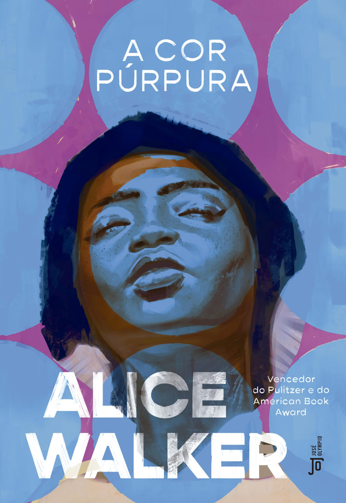
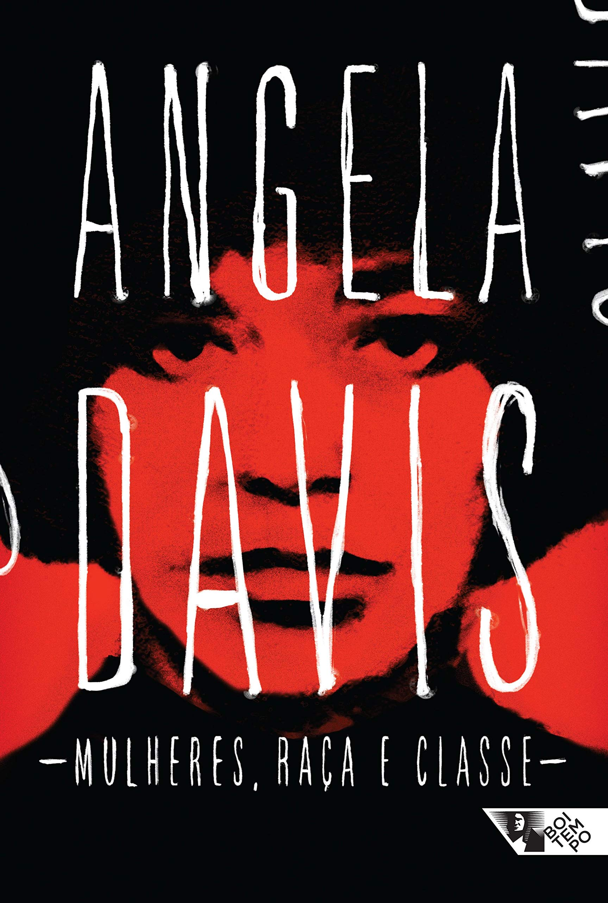

CLÁSSICO
Pedir ajuda não deveria ser perigoso.
O Alerta Rosa é uma plataforma pensada para proteger mulheres, crianças e adolescentes: alerta rápido, rede de apoio e privacidade em cada decisão de projeto.
Este site apresenta um protótipo institucional. O aplicativo ainda está em desenvolvimento e não está disponível.
Tecnologia a serviço de quem mais precisa de proteção
Quando quem ameaça está por perto, até pedir ajuda é arriscado. O Alerta Rosa nasce para reduzir esse risco: um caminho rápido, discreto e confiável entre quem está em perigo e quem pode ajudar.
Mais do que um botão, é um projeto que será construído em diálogo com especialistas, organizações e serviços oficiais da rede de proteção.
- Acolhimento. Linguagem simples e sem julgamento.
- Privacidade. Cada pessoa decide quem vê o quê.
- Confiabilidade. Funciona quando mais importa e diz com honestidade o que ainda não faz.
O que o Alerta Rosa vai oferecer
Cada recurso mostra a etapa planejada: nada abaixo está pronto para uso ainda.
Botão SOS
MVPSegure por 2 segundos para acionar. Evita toques acidentais e avisa a rede de apoio.
Acionamento por voz
Fase 2Palavra-código reconhecida no próprio aparelho, sem enviar áudio para a nuvem.
Localização em tempo real
MVPCompartilhada só durante o alerta ou o trajeto, e encerrada por você.
Rede de Guardiãs
MVPPessoas de confiança que você escolhe e que recebem o alerta com a sua localização.
Cofre de evidências
MVPFotos, áudios e anotações cifrados, com impressão digital (hash) e data para checar a integridade.
Interface discreta
MVPÍcone e nome neutros e PIN de coação, que abre uma tela falsa e envia um alerta silencioso.
IA de apoio
Fase 2Sugere atenção a padrões de risco, no aparelho. Não decide por você nem aciona ninguém sozinha.
Biblioteca de direitos
MVPInformação clara sobre tipos de violência, Lei Maria da Penha e onde buscar ajuda.
Crianças e adolescentes
Fase 2Canal adaptado, com adulto de confiança e orientação ao Disque 100. Exige validação com especialistas.
Teste o botão SOS
Mantenha o botão pressionado por 2 segundos (toque, mouse ou tecla Espaço/Enter). Veja o que o aplicativo real fará.
Simulação: nenhum alerta, localização ou gravação é enviado ou feito.
- Avisaria suas Guardiãs com alerta prioritário
- Compartilharia sua localização enquanto o alerta durar
- Iniciaria uma gravação cifrada, guardada no aparelho
- Mostraria como ligar para 190, 180 ou 100
Segure por 2 segundos
TERRITÓRIO PROTEGIDO
Rotas Seguras e Rede de Apoio
Mapeamento dinâmico de delegacias da mulher, unidades de pronto atendimento, pontos de acolhimento parceiros e corredores com iluminação reforçada para deslocamentos protegidos.
1ª DEAM · Delegacia da Mulher
Hospital Materno de Referência
Ponto de Acolhimento Rosa
Centro de Referência da Mulher
Base Comunitária Segura 24h
Pronto-Socorro Municipal 24h
DELEGACIA ESPECIALIZADA
1ª DEAM - Delegacia da Mulher
Av. Central da Paz, 1020 — Centro
Atendimento: 24 Horas Ininterruptas
Telefone: Ligue 180 / (11) 3224-5000
Atendimento humanizado, registro imediato de ocorrências, pedido de Medida Protetiva de Urgência e salas privativas de acolhimento.
CONHECIMENTO É PROTEÇÃO
Biblioteca de Direitos e Empoderamento
Conhecimento compartilhado fortalece a autonomia e salva vidas. Baixe gratuitamente materiais educativos, clássicos sobre direitos e histórias inspiradoras de resistência feminina.
 DIREITOS
DIREITOS
Sejamos Todos Feministas
SOCIEDADE
O Mito da Beleza
CLÁSSICO
O Segundo Sexo
 VOZES
VOZES
Eu Sei Por Que o Pássaro Canta
 HISTÓRIA
HISTÓRIA
Extraordinárias

LITERATURAA Cor Púrpura
 MEMÓRIAS
MEMÓRIAS
Quarto de Despejo
 CLÁSSICO
CLÁSSICO
Calibã e a Bruxa

DIREITOSMulheres, Raça e Classe
Download iniciado com sucesso!
Tecnologias, com os limites ditos em voz alta
Cada tecnologia entra onde traz ganho real de proteção, e não por moda.
Criptografia ponta a ponta
Evidências e mensagens só abertas por quem tem a chave.
Limite: perder a chave pode significar perder o acesso. A recuperação precisa ser desenhada com cuidado.
MVPCloud
Backup, sincronização e API, guardando apenas dados cifrados.
Limite: exige região e contratos adequados à LGPD e plano de resposta a incidentes.
MVPEdge AI
Modelos rodando no aparelho (ex.: LiteRT, antigo TensorFlow Lite, e Core ML) para voz e padrões de risco.
Limite: há falsos positivos e negativos. A IA sugere e a pessoa decide.
Fase 2Blockchain
Ancora só o hash e a data de uma evidência, para provar que ela não foi alterada.
Limite: o conteúdo não vai para a rede. A validade jurídica depende da cadeia de custódia.
Fase 2Mesh P2P (Bluetooth e Wi-Fi Direct)
Alerta sem internet, repassado entre aparelhos próximos.
Limite: depende de outras pessoas com o app por perto e de restrições do iOS e do Android.
PesquisaProvas de conhecimento zero (ZKP)
Comprovar algo, como ser uma Guardiã verificada, sem revelar dados pessoais.
Limite: técnica complexa. Será usada só onde houver ganho claro de privacidade.
PesquisaComo o sistema funciona
Cadastro mínimo
Só o necessário, com consentimento claro e opção de apagar tudo.
Escolha das Guardiãs
Você convida pessoas de confiança. Elas aceitam antes de receber alertas.
Alerta
Por toque longo, PIN de coação ou, no futuro, comando de voz.
Resposta e registro
As Guardiãs são avisadas, e as evidências ficam cifradas e verificáveis.
AparelhoApp, cofre local, Edge AI e modo discreto
Canal seguroTLS, notificações push e, em pesquisa, mesh
NuvemAPI, dados cifrados e logs de auditoria
Rede de apoioGuardiãs e serviços parceiros
Um olhar sobre o app
Protótipo visual com dados fictícios. Não é o aplicativo funcionando.
- Estado da proteção sempre visível.
- Guardiãs e check-in de trajeto em um só lugar.
- Evidências com impressão digital para conferir a integridade.
Proteção ativa · 3 Guardiãs
Rede de Guardiãs
ABCCheck-in de trajeto
Chegar em casa até 22:30.Sem confirmação, as Guardiãs são avisadas.
Cofre de evidências
Áudio, 14:02a3f9…c21eFoto, 14:05
7b10…e94dPrivacidade, LGPD e acessibilidade desde o início
LGPD
Dados sensíveis com consentimento, minimização e relatório de impacto (RIPD). Atenção ao melhor interesse de crianças e adolescentes.
Segurança
Criptografia ponta a ponta, autenticação forte, logs de auditoria e testes de invasão antes de qualquer lançamento.
Acessibilidade
Meta WCAG 2.2 AA: leitor de tela, bom contraste, linguagem simples e, no futuro, Libras.
Confiabilidade
Fila de envio com conexão ruim, parcerias com serviços oficiais e avisos claros: não substitui 190, 180 ou 100.
CONTATO
Equipe e contato
Quer apoiar, validar ou participar do projeto? Fale com a gente.
Quem está por trás

Gustavo MedeirosFull Stack
Leonardo RodriguesFull Stack
Pedro CostaFull Stack

Rian LimaFull Stack

Wellington GamaFull Stack